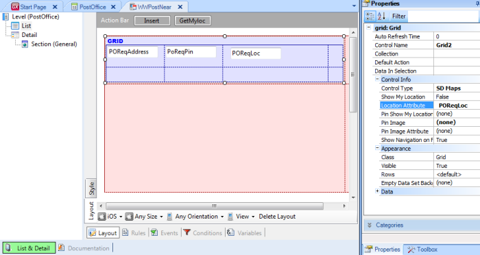
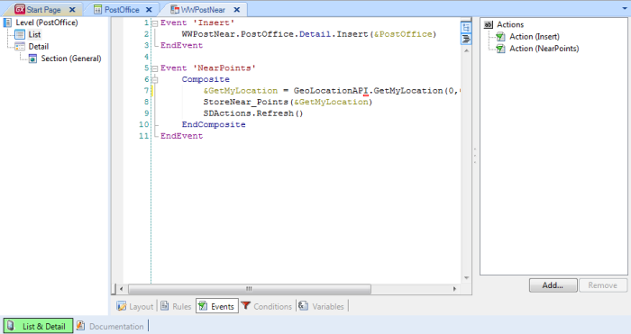
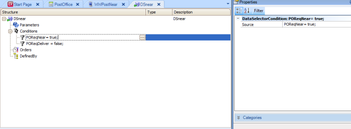
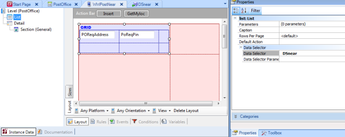
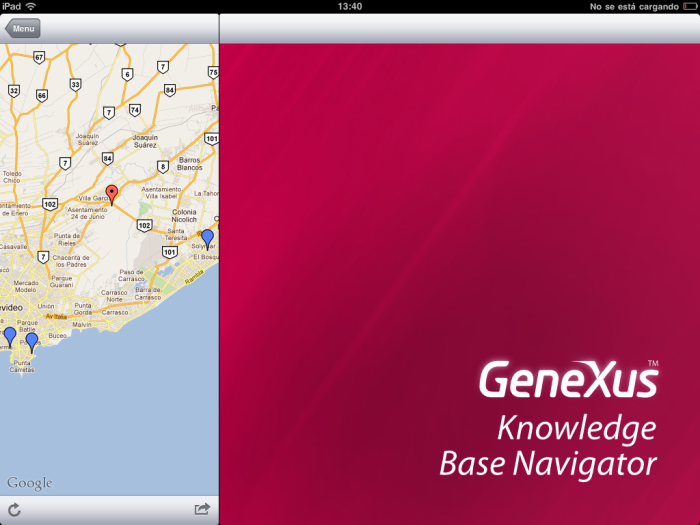

Show My location and nearby places (20km). In order to do this, we will create a transaction to store all of the post office’s requirements. To view only nearby places, within a range of 20 km from my current position, all distances between my current position and those locations are recalculated. Distance values are stored in the database and filtered by a data selector. Then, the Smart Device application shows the delivery points (using the grid's Maps Control Type) type and the current position (using the GetMyLocation method of the GeoLocation External Object). Below is a detailed description of the four steps required for this implementation. 1. Create the PostOffice transactionFirst, create the transaction that will be used to store all of the Post Office's requirements. POReqId * // Autonumber POREqAddress // CHar(500): Address or description POReqLoc // Geolocation: Latitude, Longitude POReqDeliver // boolean PoReqPin // Image: Image Icon POReqNear // boolean POReDistance // Numeric(10,4) 2. Create a dashboard object and an Entry panel (WWPostNear)Apply the WWSmartDevices Pattern (WWPostOffices will be created), and set:
 Create a Menu object and add the WorkWithDevicesPostOffice Item. 3. Get my position and calculate the distance to each pointCreate a "NearPoints" action in the WWPostNear List in the object and invoke the GetMyLocation method. To create the action, click on List node, go to Events and select the Add action button (GetMyLoc). To invoke the GetMyLocation method, go to Events and write the following code:
Event 'NearPoints'
&GetMyLocation = Geolocation.GetMyLocation(0,0,false)
EndEvent
// where:
// &GetMyLocation is based on GeoLocationInfo Data type,
// Geolocation is not a variable , it's an external object's static reference
Note: The GetMyLocation method must be invoked from an action; it can’t be invoked from a procedure because this method is executed on the device side. Create a nested action and from there invoke the procedure that stores “my position” in the database (the Composite command clause must be used to synchronically trigger nested actions). This action sets the GeoLocationInfo parameter, which is the result of invoking the GetMyLocation method mentioned above. It will be similar to the following:
Event 'NearPoints'
Composite
&GetMyLocation = Geolocation.GetMyLocation(0,0,false)
StoreNear_Points(&GetMyLocation)
EndComposite
EndEvent
This means that the StoreNear_Points procedure inserts my position and updates the distance to all points stored in the database.
parm(&GetMyLocation)
for each // Calculate and update the distance of any points to my current location
where POReqDeliver = false
&Currdistance = &GeoLocation.GetDistance(&GetMyLocation.Location, POReqLoc)
if &Currdistance < &distance
POReqNear = true
else
POReqNear = false
endif
POReqdistance = &distance
endfor
Create a nested action to refresh the data, writing code similar to this: SD Actions.refresh().  4. Create a Data Selector object an apply it to filter the nearby locationsCreate the Data Selector object as in:  This condition should be defined: POReqNear = true or POReqdistance < &distance  The Data Selector must be included in WWPostNear/List/DataSelector. After Execute, it looks as follows:  A complete Knowledge Base of these samples is available Postman.
|
| Backlinks | ||
| Geolocation - Showing My Location | Geolocation API - Scenarios | HowTo: Using Geolocation Tracking |
| HowTo: Using SD Geolocation Control in Smart Devices |